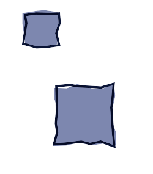

$ cat img-110.xml | ./pppsq.opt - | ./ppplt.opt - | ./ppptza.opt - | ./xmgk.opt -
$ convert -delay 45 -loop 0 img-110.1.png img-110.2.png img-110.3.png img-110.gif
<msl> <image> <merge> <layer> <new w='250' h='285' rgb='255,255,255' /> <path coord='absolute' rgb='125,135,175'> <for_square v='PNT' p='40,20' a='55' n='2'> <line_to p='_%[PNT]:-4+4:-4+4' /> </for_square> <close_path /> </path> </layer> <layer compose='multiply'> <new w='250' h='285' rgb='255,255,255' /> <path coord='absolute' rgb='125,135,175'> <for_square v='PNT' p='90,140' a='95' n='4'> <line_to p='_%[PNT]:-4+4:-4+4' /> </for_square> <close_path /> </path> </layer> <layer compose='multiply'> <new w='250' h='285' rgb='255,255,255' /> <path coord='absolute' rgb_stroke='10,20,55' stroke_width='2.8'> <for_square v='PNT' p='90,140' a='95' n='4'> <line_to p='_%[PNT]:-4+4:-4+4' /> </for_square> <close_path /> </path> </layer> <layer compose='multiply'> <new w='250' h='285' rgb='255,255,255' /> <path coord='absolute' rgb_stroke='10,20,55' stroke_width='2.8'> <for_square v='PNT' p='40,20' a='55' n='2'> <line_to p='_%[PNT]:-4+4:-4+4' /> </for_square> <close_path /> </path> </layer> </merge> </image> <display /> <write filename='img-110.png' /> </msl>
<msl> <image> <merge> <layer> <new w='250' h='285' rgb='255,255,255' /> <path coord='absolute' rgb='125,135,175'> <for_square v='PNT' p='40,20' a='55' n='1'> <line_to p='%[PNT]' /> </for_square> <close_path /> </path> </layer> <layer compose='multiply'> <new w='250' h='285' rgb='255,255,255' /> <path coord='absolute' rgb='125,135,175'> <for_square v='PNT' p='90,140' a='95' n='3'> <line_to p='%[PNT]' /> </for_square> <close_path /> </path> </layer> </merge> </image> <display /> </msl>